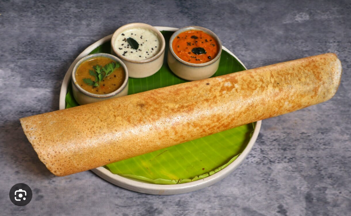

Soaking Lentils And Rice
In a bowl take the idli rice or parboiled rice along with the regular white rice.
Instead of adding regular rice, you can also make the dosa with a total of 1 cup idli rice as I have shown in the video.
The video has the recipe ingredients doubled in proportion.
To the same bowl, add urad dal and fenugreek seeds.
Rinse the rice, lentils and methi seeds together a couple of times and keep aside.
In a separate bowl, take the flattened rice.
Rinse it once or twice in water and then add rinsed flattened rice to the bowl containing the rinsed rice+lentils+methi seeds.
Pour 1.5 cups water. Mix. Cover with a lid and soak everything for 5 to 6 hours.
Making Dosa Batter
Drain all the water and add the soaked ingredients in a wet grinder jar.
Add ⅔ to ¾ cup water and grind till you get a fine grainy consistency of rice in the batter. A smooth consistency of batter is also fine.
If the mixer gets heated up, then stop and wait for some minutes. When the mixer cools down, grind again.
Depending on the jar capacity, you can grind everything once or in two batches.
I ground in two batches and added overall ¾ cup water.
Now take the batter in a large bowl or pan.
Add ½ tsp rock salt. Mix very well. Cover and allow to ferment for 8 to 9 hours or more.
Time of fermentation will vary depending on the temperature conditions.
A proper fermentation will double or triple up the volume of the batter and you will see tiny air pockets in the batter with a light sour aroma.
Now lightly stir the batter, before you begin to make dosa.
Making Dosa
Heat a cast iron pan. When the pan becomes hot, spread ¼ to ½ teaspoon oil all over the pan.
Do keep the heat on low to low-medium heat, so that you are easily able to spread the batter.
If the pan base is very thick, then keep the flame to medium.
Do not spread oil if you are using a non stick pan, as you won’t be able to spread the batter.
Now take a ladle full of the batter.
Pour the dosa batter and gently spread the batter starting from the center and moving outwards.
Cover it with a lid and cook the dosa on a low to medium heat.
Do regulate the flame as per the pan size and thickness.
When you see the batter on the top has cooked well and the bottom has become crisp and golden, then sprinkle ¼ to ½ teaspoon oil on the edges and center.
With the spoon spread the oil on the dosa.
Cook till the base is nicely golden and crisp.
The base will leave the pan and the sides will also get separated when it gets cooked.
Fold and serve sada dosa hot. Make all dosai this way.
Serve these crisp plain dosa with sambar or potato masala or coconut chutney.